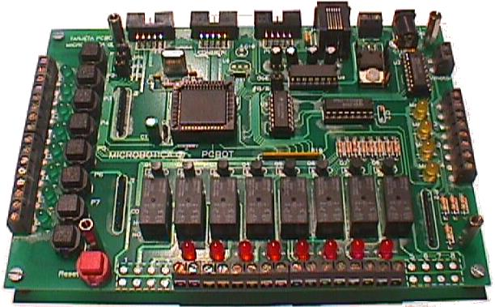
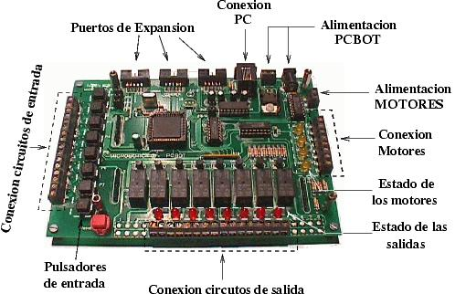
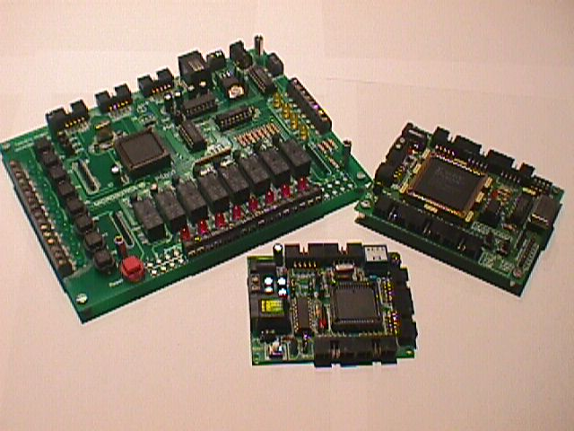
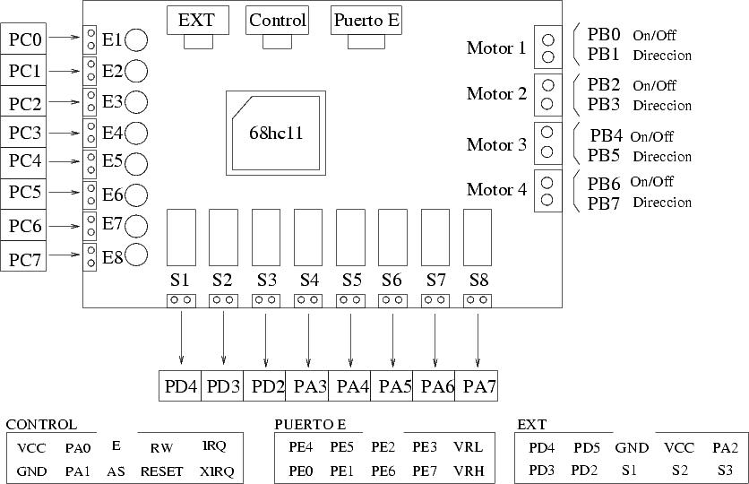
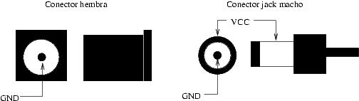

| TARJETA PCBOT |
| [Introducción] | [caracteristicas] | [Autores] | [Licencia] | [Historia] | [Puertos] | [Alimentación] | [Download] | [Links] | [Noticias] | [Agradecimientos] |

La tarjeta PCBOT permite controlar circuitos externos desde un PC. Dispone de 8 salidas que permiten abrir/cerrar circuitos externos, 8 entradas para conectar interruptores externos y conexión para 4 motores. Hay 8 pulsadores que permiten simular entradas externas y leds que indican el estado de las salidas y los motores, de manera que se pueden depurar aplicaciones sin necesidad de conectar motores ni circuitos externos.
La programación de PCBOT se puede realizar de varias maneras, según al nivel en que nos queramos mover (depende de los conocimientos del usuario/programador).
Se trata de una placa MULTIPLATAFORMA, que se puede usar tanto en máquinas Linux como Windows.

La Tarjeta PCBOT se diseñó para vendérsela a la empresa
MICROLOG, con los que se mantiene exclusividad en la venta.
La primera tirada se realizó en febrero de 1999.
Aquí se muestra una foto de PCBOT junto a la tarjeta CT6811 y la JPS

La TARJETA PCBOT incluye tres puertos de expansión por los que se han sacado diferentes pines del 6811. En la siguiente figura se muestran estos puertos así como los pines del 6811 empleados para cada recurso de PCBOT.

La tarjeta PCBOT se alimenta bien a través de un conector de tipo Jack o conectando los cables a la clema de alimentación. La alimentación nominal es de 6-12 voltios.

| HARDWARE |
| pcbot.pcb (152KB) | PCB, hecho con Tango-PCB plus, 2.11 |
| pcbot.sch (18KB) | Esquemático, hecho en Orcad |
| pcbot.net (9KB) | Netlist, para Tango Versión 2.11 |
| DOCUMENTACIÒN |
| manual-pcbot.pdf (84KB) | Manual de la tarjeta PCBOT |
| manual-pcbot-src.tgz (32KB) | Fuentes del documento, para Lyx 1.1 y figuras en Xfig |
| conex.pdf (6KB) | Esquema de los puertos de expansión y pines del 6811 empleados |
| test.pdf (9KB) | Prueba rápida para comprobar PCBOT. Entorno MS-DOC |
| miscelanea.zip (61KB) | Fuentes del documento test.pdf y otros dibujos en xfig |
| SOFTWARE PARA LINUX |
| intpcbot-bin.tgz (11KB) | Interprete para PCBOT |
| intpcbot-src.tgz (16KB) | Fuentes del interprete |
| entorno-pcbot-bin.tgz (19KB) | Front-end con ncurses para el interprete. Permite editar y ejecutar programas para PCBOT |
| entorno-pcbot-src.tgz (24KB) | Fuentes del entorno para PCBOT |
| SOFTWARE PARA MSDOS/WINDOWS |
| intpcbot.zip (44KB) | Interprete para PCBOT (El utilizado en el manual de usuario) |
| intpcbot-src.zip (123KB) | Fuentes del interprete. Hechas con el Turbo C de Borland, v.2.0 |
| EJEMPLOS PARA PCBOT |
| activa1.bot | Activar la salida 1 |
| activa8.bot | Activar la salida 8 durante 3 y luego desconectarla |
| entrada1.bot | Activar la salida 1 cuando se activa la entrada 1 |
| motor.bot | Mover el motor 1 en un sentido, pararlo y luego moverlo en otro |
| infinito.bot | Activar y desactivar la salida 4 en un bucle infinito |
| control.bot | Manejar el motor 1 con las entradas 1, 2 y 3 |
| parpadeo.bot | Activar y desactivar 4 veces la salida 6 |
| retardo.bot | Ejemplo de retardos |
| salidas.bot | Ejemplo que activa/desactiva todas las salidas, en grupos de 4 |
| tecla.bot | Activar la salida 5, esperar a que se pulse una tecla y desactivarla |
| test.bot | Prueba de PCBOT. Activación/desactivación de todas las salidas y movimiento de todos los motores, en ambos sentidos |
| ejemplos.zip | Todos los ejemplos anteriores |